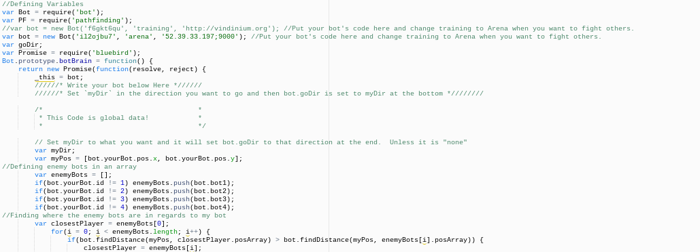
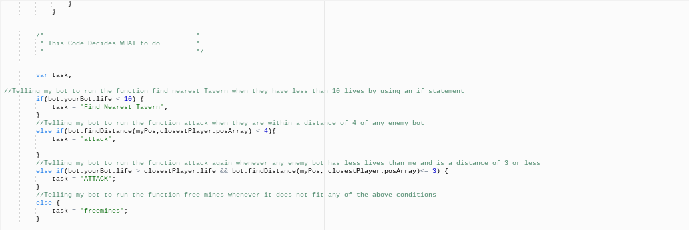
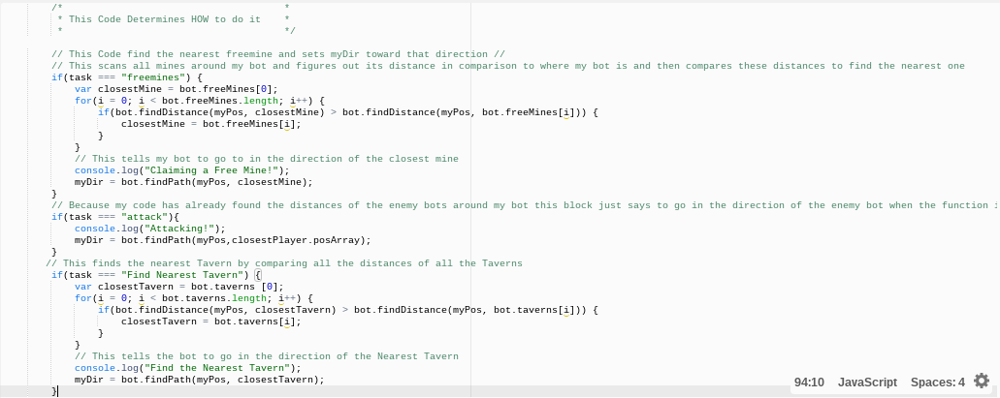
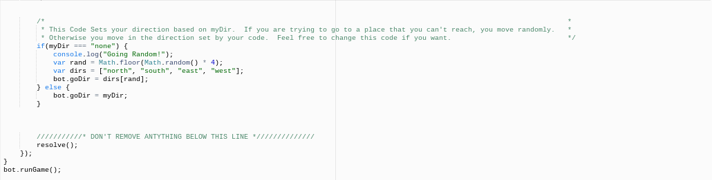

Vindinium is an AI (Artificial Intelligence) game played by bots. It requries players to create commands using programming,which the bot then follows. The setting of the game is chosen randomly. With the commands set in, the bot roams through the map, collecting gold from mines. The bot also has the ability to attack other players as they approach them. This lower's the health of other players, putting your bot ahead in the game. When a bot's health is low, it goes to Taverns to restore its health. At the end of the game, when the player is out of turns, the bot with the most gold wins.
To start off, I first had to program what my bot does. This explains what to do, it does not explain how to do it. My variable was named task because we need to create tasks for the bot to follow. I then created an if statement, which told my bot to run the function "Find the Nearest Function" when they have less than 10 health. This needs to happen, otherwise my bot would die. The "if" statement is used to identify a block of code that is soon to be conducted, if the condition is proven to be correct. In this case the condtion is if my bot has less than 10 health, bot.yourBot.life < 10. Condtions come after the "if" and are placed inside parenthesis. Furthermore, the block of code would be task = "Find Nearest Tavern." It is located inside the curly braces. Remember, the block of code only goes through, if the condition is proven to be true. Secondly, the next task that my bot is able to complete is attack other players. To do this, I used an "else if" statement. This statement identifies a new condtion that is to be run, if the first condition is not true. My bot will attack any enemy bot if they are within a distance of 4. Before I programmed the code to decide what to do, I created an "if" statement that runs through all the bots, and finds where all the bots are located. With this, my bot is able to attack. Lastly, my bot is able to run the function attack again, whenever any enemy has less health than me and is located at a distance of 3 or less. Again, I created an "else if" statement for my bot to do this. I also included an "else" statement, which identifies a block of code to be conducted, if the condition is not true. This else statement tells my bot to run the condtion "free mines" when it does not fit any of the above conditions.
 Once I explained to my bot what to do, I needed to explain how to do it. First, I created an if statement, which scans all the mines aound my bot and figures out its distance in comparison to where my bot is. Then it compares these distances to find the nearest one. Moreover, using console.log, my code tells my bot to go in the direction of the nearest mine. This will help my bot obtain more gold, which is how you win the game. Since my code had previously located the distance of the enemy bots, a new "if" statement's block says to march forth towards the direction of enemy bot, when the function is attack. Lowering the health of of players, will place my bot at an advatage, since those others places will have to go back to Taverns. While they do this, I will be able to get ahead and obtain more gold. The next block finds the nearest Tavern, by comparing all the distances of all Taverns. My bot is then told to go in the direction of the nearest Tavern. Going to Taverns will restore my health, therefore I will be ready to attack other players and not die.
 My bot was able to complete and perform all the tasks I longed for it to do. From going to Taverns, attacking other players, and finding the nearest player to attack, I was able to program my bot to do it all. At first, it was quite difficult understanding how all the programming worked. Once I recieved all the necessary help I needed, I started to understand the process more. There are two different parts to it. In the first part, the coding decribes what to do. The bot knows what it needs to do, but it doesn't know how to do it. This leads us to the second part, which is how to do it. Now, the bot understands what to do in order to complete the task. With my new knowledge, I was able to complete my first task, going to Taverns. The next step, attacking players, was an easier task to program. It was relatively the same as programming the first task. All that was really needed to do was change the conditions of the "else if" statements. The process involved mostly replicating the previous "if" statement. My final task was to find the closest player and attack it. This was the least complicated task to complete. I created a new "else if" statement, allowing my bot to know what to do. When I finally was able to complete all three tasks, I had a far more better understanding of the programming, than when I first started. I came in with a somewhat negative mindset to the project because I thought it would be a long and very hard process to understand. When I was able to program my bot to complete all these tasks, it was a relief. Playing against different players was very fun and exciting. It was a very competitive environment. Overall, I definitely enjoyed getting to see my bot compete against other bots.